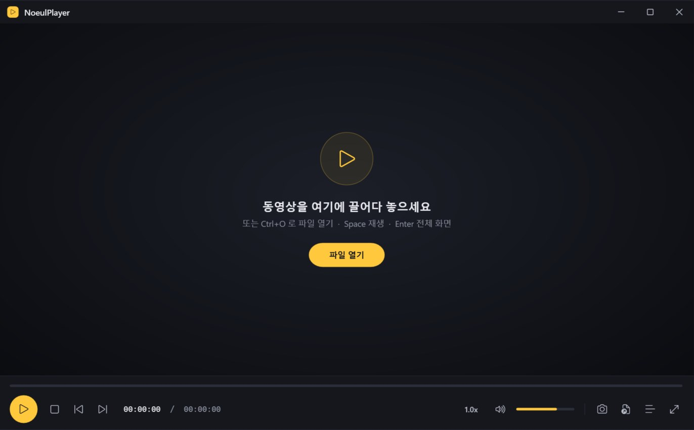
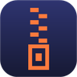
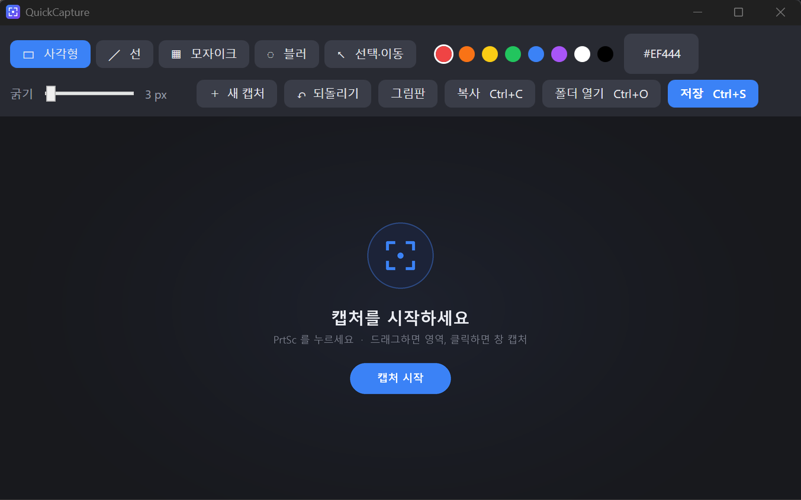

케이소프트가 만든 Windows 프로그램
복사한 텍스트·이미지를 기록하고, 고정 항목을 숫자 키로 붙여넣는 클립보드 관리자

코덱 설치 없이 바로 재생되는 가볍고 깔끔한 동영상 플레이어
표·그림·할 일·SQL 쿼리를 한곳에 기록하는 업무일지 프로그램

모든 CPU 코어로 빠르게 압축하고 푸는 압축 프로그램

항상 화면 위에 떠 있다가, 필요한 순간 바로 찍고 편집하는 가볍고 빠른 캡처 도구
※ 각 프로그램 소개 페이지는 한국어로 제공됩니다.